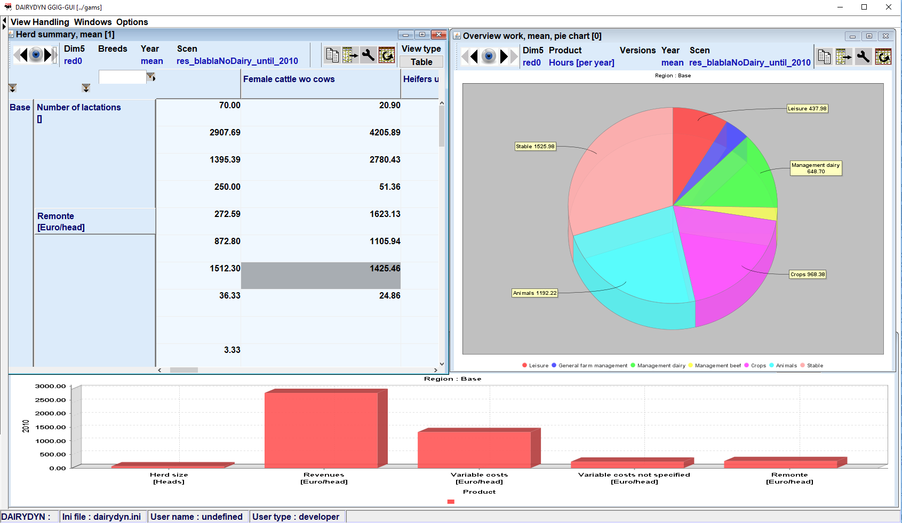
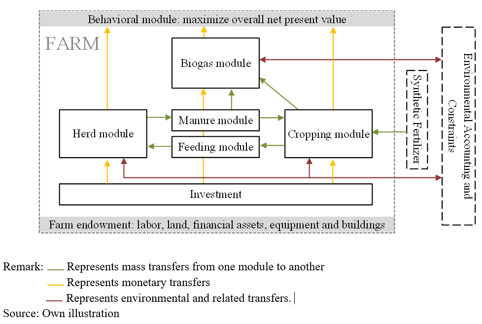

FarmDyn
A dynamic mixed integer bio-economic farm scale model
FARMDYN provides a flexible, modular template to simulate different farming systems (dairy, mother cows, beef fattening, pig fattening, piglet production, arable farming, biogas plants) at single farm scale.

Universität Bonn
Institute for Food and Resource Economics
Economic Modeling of Agricultural Systems Group
Main characteristics
- Fully dynamic, simulations typically cover several decades, alternatively comparative-static or short run version
- Integer variables capture indivisibilities in investments (machinery, buildings) and labour use
- Selected farm management decisions (e.g. feeding, manure management, labour use) depicted with a sub-annual temporal resolution, partially bi-weekly
- Deterministic or stochastic programming version. The latter treats all variables as state dependent, allows for sceneario tree reduction and covers different risk measures (value at risk, MOTAD ...)
- Farm labour, machinery and stable use are modelled in rich detail
- Arable cropping can be differentiated by tillage type and intensity Different intensities are also available for grassland management
- For dairy farming, the model distinguishes several herds by milk yield potential and lactation phase
- The machinery park is available in different mechanization levels
- Highly differentiated modules for nitrogen fate, while covering German legislation on fertilizer use

The model is currently parameterized for German conditions using highly detailed farm planning data provided by KTBL in combination with farm structural statistics. It offers a complementary approach to other farm scale models used in the institute such as the farm group models integrated in CAPRI or FADN based farm-scale progamming models which both are comparative-static, calibrated against observed farm programs with Positive Mathematical Programming while being far less detailed with regard to technology, and not comprising explicit investement decisions.
The model is realized in GAMS, solved with the industry MIP solver CPLEX, linked to a Graphical User Interface realized in GGIG and hosted on a Software Versioning System. Design of experiments, building on R routines directly called from GAMS, can be used in combination with farm structural statistics to systematically simulate different farm realizations (assets, farm branches) and boundary conditions such as input and output prices or emisisons ceilings using a computing server to solve several instances in parallel. That approach has e.g. been used to estimate a statistical meta model for Marginal Abatement Costs of Green House Gases from dairy farms. Code development and testing follows agreed upon guidelines.